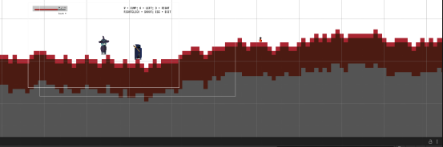

This project contains a concept build of a 2D Platformer Rogue-lite game of the game “Gothicc Trojan” which involves the very basic and rough mechanics that will be the pillars of the game, this including basic animations, basic movements, enemy AI, coin system, etc. Assets, character roles, game flow, concept image, feature list will also be discussed. The game engine used in this development is using Unity. This project was made to fulfill the university's final project for the course "Game Development".
Gothicc Trojan is a single-player 2D Platformer Rogue-lite game which will involves the main character “Trojan”, an immortal sorcerer (the main character will respawn if died) that can travel through dimensions (different types of procedural generated game stages). The settings will be mainly a mix between cyberpunk and medieval theme. The game will have a 2D pixel art procedural generated stages/levels, different types of enemies and bosses, game upgrades and powerups or character progression. The objective of the game is to kill the enemies, fight through the stages, and finish the game by killing the last boss of the game.
^ Explore the world with procedural generated stages, with each of the stages will be different every time the player plays.
^ Fight through the stages, while encountering menacing, challenging enemies and bosses.
^ Enemies drop coins for buying upgrades (stats, equipments)
^ Equipment upgrades, & dismantling equipment for enhancing. // not implemented yet.
^ Eye-catching, beautifully crafted 2D world.
^ Fight with simple controls but hard to master.
^ Character stats upgrades and progression. // not implemented yet.
^ Main Character (Temporary)
The main character in the game is a witch that can throw magic spell that represented as blue ball.
^ Basic Enemy (Temporary)
The enemies here represent as executioner that always chase the player. This character can throw spell that represented as yellow ball.
^ Procedural Generated Stages
1st time load:
2nd time load:
^ Player Movement
The player can move to right, left, and jump using three different keys on the keyboard which are:
W: Jump,
A: Move Left,
D: Move Right.
^ Player Shooting Mechanic
This is a basic player shooting mechanic that the player will shoot this tiny balls to the enemy and deal damage by clicking Right Click on the mouse.
^ Enemy Movement
The enemy can search and move towards the player, after a certain range, the enemy can stop the movement, and if the player move towards the enemy, the enemy will retreat itself.
^ Enemy Shooting
The shooting mechanic for the enemy is more or less the same as the player but there is a different thing that is added to the script, because the enemy must shoot automatically rather than using keyboard inputs like the player does using IEnumerator.
^ Coin/Currency
There is a currency system that can be used to upgrade gears and stats for the player to grow, this coin will drop from the enemy when the enemy is killed and stored in the Player Stats and will be displayed in the game UI.
^ Powerups
There is a mechanic called powerups where when the player obtain the powerups, there will be a few bonuses affecting the player’s stats, such as health regeneration or the player model become smaller. More powerups can be added later.
^ Player Stats
The player stats consists of health, and coins or currency value.

^ Enemy Stats
The enemy stats are pretty much the same as the player’s, the one different is the enemy will drop currency if died.
^ Enemy Spawner
The enemy will spawn in a fixed time interval and in a random position as soon as the player starts the scene.
There are imported sprites that is downloaded from a website called Itch.IO and those are:
^ Coin,
^ Powerup,
^ Enemy,
^ And Player sprites.
While the rest of the prefabs are self made and that is, Enemy Spell, Tile, Ground, Stone, and Player Spell.
Implemented some basic animations for the enemy, coin and the player from the sprites downloaded from Itch.IO
DOWNLOAD THE GAME HERE ↓